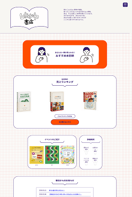
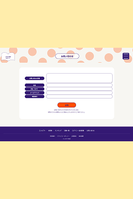
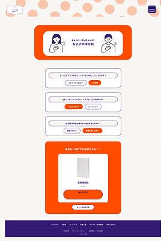

しまかわ書店（架空）
架空の観葉植物レンタルサイト



概要
架空の書店を想定したサイトで、jQueryのスライダーを使った新刊紹介や、レスポンシブなレイアウト設計を担当しました。書籍を「じっくり選ぶ」体験を意識し、情報を詰め込みすぎず、余白を活かしたレイアウトにしています。
工夫した点・学んだこと
-
スライダー実装
Slickスライダーで新刊書籍をカルーセル表示。導入時は「動けばOK」にせず、自動再生の秒数やスワイプの挙動など、オプション設定の意味を1つずつ確認しながら実装しました。
-
レスポンシブ対応
メディアクエリの記述順序（max-widthは広い方から狭い方へ）を意識せず書いたことで意図しない上書きが発生し、実際にバグを踏んで順序の重要性を体感しました。
-
カード設計
書籍情報のカードをFlexboxで組み、画面幅が変わっても崩れにくいレイアウトを意識しました。